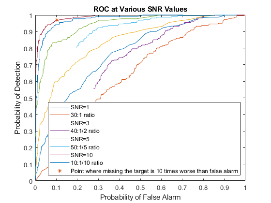
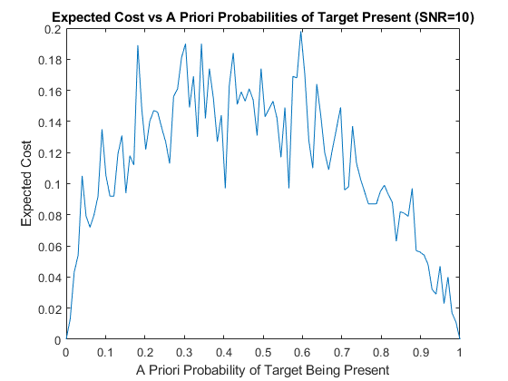

Stochastics Project 4 - Omar Thenmalai
Contents
Part 1
num_iterations = 1000;
A = 1;
p0 = 0.8;
p1 = 0.2;
target = randi(5,1,num_iterations);
target(find(target == 1)) = A;
target(find(target > 1)) = 0;
SNR = [1 2 5 10]
std_dev_Z = [30,40,50,10];
eta = 0.01:0.01:10;
etas = (p0/p1) * eta;
Y_Z = zeros(1,num_iterations);
prob_error = zeros(1, length(SNR));
prob_error_Z = zeros(1, length(SNR));
figure;
for i = 1:1:length(SNR)
std_dev = sqrt(A/SNR(i));
X = normrnd(0, std_dev, 1,num_iterations);
Z = normrnd(0,std_dev_Z(i),1,num_iterations);
Y = X + target;
index1 = find(target == A);
index2 = find(target == 0);
Y_Z(index1) = target(index1) + X(index1);
Y_Z(index2) = target(index2) + Z(index2);
prob_ygivenH0 = normpdf(Y,0,std_dev);
prob_ygivenH1 = normpdf(Y,A,std_dev);
prob_Z_ygivenH0 = normpdf(Y,A,std_dev_Z(i));
prob_Z_ygivenH1 = normpdf(Y,A,std_dev);
result = zeros(1,num_iterations);
result(find((prob_ygivenH1./prob_ygivenH0) > (p0/p1))) = 1;
result(find((prob_ygivenH1./prob_ygivenH0) < (p0/p1))) = 0;
result_Z = zeros(1,num_iterations);
result_Z(find((prob_Z_ygivenH1./prob_Z_ygivenH0) > (p0/p1))) = 1;
result_Z(find((prob_Z_ygivenH1./prob_Z_ygivenH0) < (p0/p1))) = 0;
correct_detect = abs(result - target);
correct_detect_Z = abs(result_Z - target);
count = length(result(find(correct_detect == 1)));
count_Z = length(result_Z(find(correct_detect_Z==1)));
cost0 = length(target(find(target==0)));
cost1 = length(target(find(target==1)));
prob_error(i) = count/num_iterations;
prob_error_Z(i) = count_Z/num_iterations;
cD = zeros(1,length(eta));
cF = zeros(1,length(eta));
cD_Z = zeros(1,length(eta));
cF_Z = zeros(1,length(eta));
result_eta = zeros(1,num_iterations);
result_eta_Z = zeros(1,num_iterations);
for j = 1:1:length(eta)
result_eta(find(prob_ygivenH1./prob_ygivenH0 > etas(j))) = 1;
result_eta(find(prob_ygivenH1./prob_ygivenH0 < etas(j))) = 0;
result_eta_Z(find(prob_Z_ygivenH1./prob_Z_ygivenH0 > etas(j))) = 1;
result_eta_Z(find(prob_Z_ygivenH1./prob_Z_ygivenH0 < etas(j))) = 0;
incorrect_detect_eta_theoretical = result_eta - target;
incorrect_detect_eta_simulated = result_eta_Z - target;
cF(j) = length(result_eta(find(incorrect_detect_eta_theoretical == 1)));
cF_Z(j) = length(result_eta_Z(find(incorrect_detect_eta_simulated == 1)));
correct_detect_eta_theoretical = result_eta + target;
correct_detect_eta_simulated = result_eta_Z + target;
cD(j) = length(result_eta(find(correct_detect_eta_theoretical == 2)));
cD_Z(j) = length(result_eta_Z(find(correct_detect_eta_simulated == 2)));
end
F = cF/cost0;
D = cD/cost1;
F_Z = cF_Z/cost0;
D_Z = cD_Z/cost1;
plot(F, D);
hold on;
plot(F_Z,D_Z);
end
plot(F(10),D(10), '*');
title("ROC at Various SNR Values");
xlabel("Probability of False Alarm");
ylabel("Probability of Detection");
legend("SNR=1", "30:1 ratio", "SNR=3", "40:1/2 ratio", "SNR=5", "50:1/5 ratio", "SNR=10", "10:1/10 ratio","Point where missing the target is 10 times worse than false alarm", 'Location', 'southeast');
hold off
p = linspace(0,1,100);
result = zeros(1,num_iterations);
cM = zeros(1,num_iterations);
cFf = zeros(1,num_iterations);
expected_cost = zeros(1,length(p));
std_dev = sqrt(A/10);
for i = 1:1:length(p)
target = randi(100,1,num_iterations);
target(find(target <= p(i)*100)) = A;
target(find(target > p(i)*100)) = 0;
X = normrnd(0, std_dev, 1, num_iterations);
Y = target + X;
prob_ygivenH1 = normpdf(Y,A,std_dev);
prob_ygivenH0 = normpdf(Y,0,std_dev);
result(find((prob_ygivenH1./prob_ygivenH0) > 0.1*(1-p(i))/p(i))) = 1;
result(find((prob_ygivenH1./prob_ygivenH0) < 0.1*(1-p(i))/p(i))) = 0;
temp = result - target;
cM(i) = length(result(find(temp==-1)));
cFf(i) = length(result(find(temp==1)));
expected_cost(i) = 10*cM(i)/num_iterations + 1*cFf(i)/num_iterations;
end
figure;
plot(p,expected_cost);
xlabel('A Priori Probability of Target Being Present');
ylabel('Expected Cost');
title('Expected Cost vs A Priori Probabilities of Target Present (SNR=10)');
prob_error
prob_error_Z
SNR =
1 2 5 10
prob_error =
0.1990 0.1680 0.1030 0.0500
prob_error_Z =
0.6740 0.6440 0.4800 0.1100
 
Part 2: ML and MAP Classifier
data = load('Iris.mat');
shuffled_data = randperm(size(data.features,1));
shuffled_features = data.features(shuffled_data,:);
shuffled_labels = data.labels(shuffled_data,:);
training_features = shuffled_features(1:(size(shuffled_features, 1)/2), :);
training_labels = shuffled_labels(1:size(shuffled_labels, 1)/2);
test_features = shuffled_features(size(shuffled_features, 1)/2+1:end,:);
test_labels = shuffled_labels(size(shuffled_labels, 1)/2+1:end);
p1 = training_features(training_labels == 1,:);
p2 = training_features(training_labels == 2,:);
p3 = training_features(training_labels == 3,:);
cov1 = cov(p1);
cov2 = cov(p2);
cov3 = cov(p3);
mu1 = [mean(p1(:,1)),mean(p1(:,2)),mean(p1(:,3)),mean(p1(:,4))];
mu2 = [mean(p2(:,1)),mean(p2(:,2)),mean(p2(:,3)),mean(p2(:,4))];
mu3 = [mean(p3(:,1)),mean(p3(:,2)),mean(p3(:,3)),mean(p3(:,4))];
label_probs = [mvnpdf(test_features,mu1,cov1),mvnpdf(test_features,mu2,cov2),mvnpdf(test_features,mu3,cov3)];
[~,result] = max(label_probs, [], 2);
num_errors = sum(test_labels~=result);
prob_error = num_errors/size(test_labels,1)
confusion_matrix = confusionmat(test_labels,result)
prob_error =
0.0400
confusion_matrix =
26 0 0
0 24 2
0 1 22